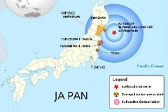

我是台電的小孩子耶！！！
日本福島核能一廠(Daiichi)共有6部沸水式機組，除了每部機組各配置有一座用過燃料池（Spent Fuel Pool）外，尚有一座共用的用過燃料池及用過燃料乾式貯存設施。日本福島核能一廠(Daiichi)共有6部沸水式機組，除了每部機組各配置有一座用過燃料池（Spent Fuel Pool）
more日本福島核能一廠(Daiichi)共有6部沸水式機組，除了每部機組各配置有一座用過燃料池（Spent Fuel Pool）外，尚有一座共用的用過燃料池及用過燃料乾式貯存設施。日本福島核能一廠(Daiichi)共有6部沸水式機組，除了每部機組各配置有一座用過燃料池（Spent Fuel Pool）
more
日本福島核能一廠共有六部沸水式機組，除了每部機組各配置有一座用過燃料池外，尚有一座共用的用過燃料池及用過燃料乾式貯存設施。
more日本福島核能一廠(Daiichi)共有6部沸水式機組，除了每部機組各配置有一座用過燃料池（Spent Fuel Pool）外，尚有一座共用的用過燃料池及用過燃料乾式貯存設施。日本福島核能一廠(Daiichi)共有6部沸水式機組，除了每部機組各配置有一座用過燃料池（Spent Fuel Pool）
more
日本福島核能一廠共有六部沸水式機組，除了每部機組各配置有一座用過燃料池外，尚有一座共用的用過燃料池及用過燃料乾式貯存設施。
more